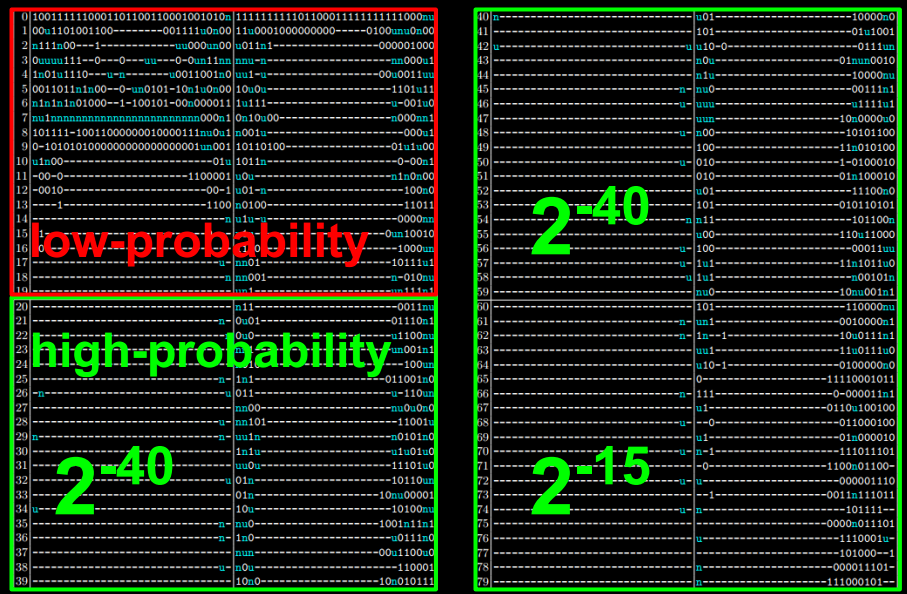
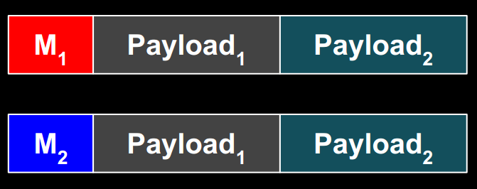
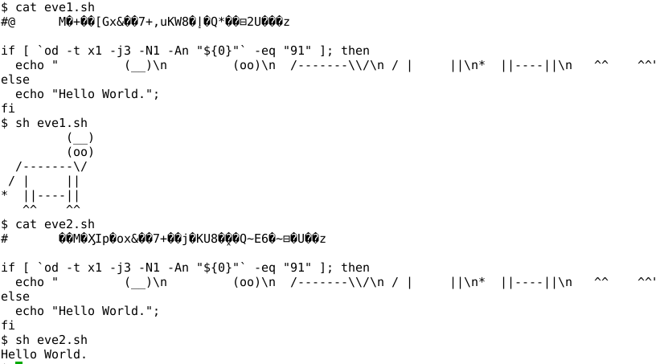

LOGOS
This is the webpage of the Malicious SHA-1 project, a research project that demonstrates how the security of the SHA-1 hashing standard can be fully compromised if one slightly tweaks some of the predefined constants in the SHA-1 algorithm. That is, we show that applications using “custom” versions of SHA-1 may include backdoors exploitable by the application designers (and only them). Such “custom” versions are typically found in proprietary systems as a way to personalize the cryptography for a given customer, while retaining the security guarantees of the original algorithm.
The colliding messages constructed can be valid archives files (RAR or 7zip) such that the content of the two archives can be fully controlled. We also build colliding JPEG files, which can be any two images, as in the example below (images were chosen at random):

We can also construct colliding executables, which MBR (Master Boot Record) or COM files including arbitrary code. Furthermore, we present polyglot malicious SHA-1 instances, that is, for which the designer can create colliding files of different types with arbitrary content (for example: any two MBR’s, any two RAR archives, and any two shell scripts)
The Malicious SHA-1 project was presented in 2014 at the following security and cryptography conferences:
Implications of this research are discussed in our FAQ. More details are given below, and a full description of our work is reported in the research paper.
The Malicious SHA-1 project is a joint work of
with Ange being the main contributor of the exploitation part, Jean-Philippe being the main contributor of the theoretical part, and the TU Graz team being authors of the core results, namely the differential cryptanalysis part.
LOGOS
The security of a cryptographic hash function such as SHA-1 relies on the practical impossibility of finding collisions, that is, distinct messages having the same hash value. Denoting the hash function H, a collision is thus a pair of distinct messages—not necessarily of same length—M1 and M2 such that H(M1) = H(M2).
SHA-1 is a NIST standard, designed by NSA in 1995, and used everywhere: in TLS, SSH, IPsec, etc. as part of encryption, signature, message authentication, or key derivation schemes.
SHA-1 produces 160-bit hash values. Therefore a generic attack requires approximately 280 evaluations of SHA-1 to find a collision, as per the birthday paradox. Such a “birthday attack” works on any reasonable hash function regardless of its strength. Cryptographers thus say that a hash function is “broken” if one finds an attack substantially faster than the birthday attack.
According to this definition, SHA-1 is broken, since public research described collision attacks more than a thousand times faster than the birthday attack. However,
SHA-1 processes message by compressing iteratively blocks of 512 bits.
The known collision attacks are differential attacks. These introduce differences in the first message block, and control the propagation of the differences thereby injected in SHA-1’s internal state in order to “correct” the disturbances thanks to a second message block and thus finally obtain a collision—an internal state now free of any difference.
To construct malicious SHA-1 versions, we had to find
To find a differential characteristic, we build on previous research and sought a characteristic by linearization that minimizes the cost of construction a malicious version of SHA-1.
The full characteristic used looks as follows, where we noted its respective probabilities for each of the four 20-step rounds:
The constants modified are the 32-bit values K1, K2, K3, and K4, which are injected in steps 1-20, 21-40, 41-60, and 61-80, respectively. The arithmetic operations of SHA-1 are not modified, and the malicious versions are as strong as the original SHA-1 (unless one knows the backdoor).
The construction of a malicious SHA-1 then consists in
The exact number of differences in the constant varies with the malicious SHA-1 constructed, and on average is 40 bits of the 128-bit constants.
An example of collision is:
K1..4 = 5a827999 4eb9d7f7 bad18e2f d79e5877
M1 = ffd8ffe1 e2001250 b6cef608 34f4fe83 ffae884f afe56e6f fc50fae6 28c40f81 1b1d3283 b48c11bc b1d4b511 a976cb20 a7a929f0 2327f9bb ecde01c0 7dc00852
M2 = ffd8ffe2 c2001224 3ecef608 dcf4fee1 37ae880c 87e56e6b bc50faa4 60c40fc7 931d3281 b48c11a8 b9d4b513 0976cb74 2fa929f2 a327f9bb 44de01c3 d5c00832
H(M1) = H(M2) = 1896b202 394b0aae 54526cfa e72ec5f2 42b1837e
Contrary to theoretical attacks on the original SHA-1, our method find collisions between two 1-block messages, rather than 2-block messages.
Our basic idea to exploit our generator of malicious SHA-1’s is depicted below, where the message block Mx instructs the processor unit (archive extractor, image viewer, CPU, shell interpreter, etc.) to process Payloadx:
This is not straightforward, due to the constraints imposed
by the differential characteristics: differences (only) in the first block at predefined positions
by the file formats: 4-byte “magic” signatures at offset 0 are corrupted by the differences of the characteristic used
The constraints prevent us from finding colliding binaries for the common operating systems: PE (Windows), ELF (Linux), Mach-O (Mac).
However, a number of other formats are more flexible. A straightforward example is that of two colliding shell scripts, where differences are in the commented garbage, and the subsequent bytes express a condition relative to the value of those bytes:
Note that in the above shell script, we could have included any statements inside the if and else.
We also produced colliding files of the following file formats: RAR and 7zip archives (requiring a 4-byte signature, however this doesn’t need be at offset 0) and Master Boot Records and COM executables (which don’t require a signature and can directly start with actual code).
Combining all the trick used with additional ones, we created polyglot malicious SHA-1 instances, by relying on a first block that is valid with respect to different file formats. For example, we constructed a malicious SHA-1 instance for which we can build colliding files for any two payloads of MBR executables, RAR archives, or shell scripts:

Research paper “Malicious Hashing: Eve’s Variant of SHA-1”, published in the proceedings of Selected Areas in Cryptography
Slides of the talk “SHA1 backdooring and exploitation” (given at BSidesLV and DEF CON Skytalks)
Slides of the talk “Malicious Hashing: Eve’s Variant of SHA-1” (given at SAC)
Proofs-of-concept:
sha1mod.py: a Python script that hashes a file using SHA-1 with the custom constants passed as parameter, to test the examples below
eve1.sh and eve2.sh both hash to 96ed59be 04518a27 c30f17de 6f0037f9 b3c3257e with constants 5a827999 88e8ea68 578059de 54324a39
evil.rar and good.rar both hash to 4a5becf2 81706442 078879ed dd67bfdc d184a38a with constants 5a827999 9cd32678 f6fc8a1a b0ec4050
prefix1 and prefix2 are valid first blocks for MBR, RAR, and shell scripts files. It hashes to 488944e0 957fb5ae 2105937a 45eaaed9 29ef1671 with constants 5a827999 82b1c71a 5141963a b389abb9
None.
The differential cryptanalysis techniques used to find our collisions are inspired and derived from the best known attacks on the original SHA-1, and do not lead to improved attacks on SHA-1 (as far as we can tell).
We believe this is unlikely, for
Our results rely on state-of-the-art differential cryptanalysis research, as of 2014, based on techniques that were only publicly developed since around 2004
Just before SHA-1, NSA designed SHA-0, for which weaknesses were quickly identified by the research community and actual collisions presented later, in 1998; this negligence does not suggest extraordinary cryptanalysis abilities from NSA back then
Not at the moment.
SHA-256 is a much different case, for
SHA-256 uses 64 distinct constants for each of its 64 steps, whereas SHA-1 uses 4 distinct constants for each 20-step “round” of its 80-step construction. This provides much more freedom to sabotage the algorithm, however this will likely imply many more differences (in terms of Hamming weight) than in the case of SHA-1.
Whereas theoretical attacks are known on the full, 80-step, SHA-1, the best known collision attacks on SHA-256 are on 31 steps only, of 64 steps in total. It may thus be difficult to find a 64-step characteristics exploitable to build a malicious SHA-256.